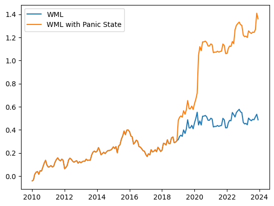
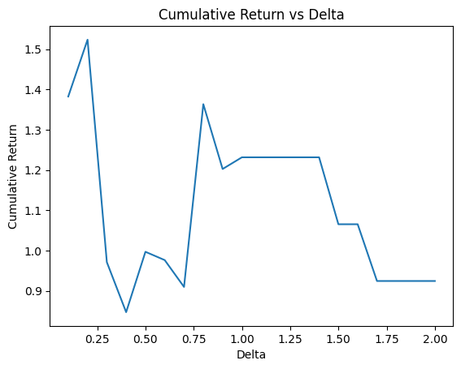

Table of Contents
Strategy Overview
This strategy is based on the paper "Revisiting (Revitalizing) Momentum" which improves upon traditional momentum strategies by incorporating a panic state indicator. The key innovation is detecting divergent patterns between short-run and long-run market returns to adjust position sizing and direction.
Key Components
- Panic State Detection:
- Monitors divergence between short-run (3-month) and long-run (120-month) market returns
- Uses volatility-adjusted thresholds to identify market stress periods
- Triggers alternative position sizing during panic states
- Position Management:
- Traditional momentum: Long winners, short losers
- Panic state: Long both winners and losers
- Dynamic adjustment based on market conditions
Reference: Revisiting (Revitalizing) Momentum
Data Collection
We begin by collecting the S&P 500 company list from Wikipedia and prepare it for data processing:
# Collect the list of the S&P 500 companies from Wikipedia and save it to a file
import os
import requests
import pandas as pd
# Get the list of S&P 500 companies from Wikipedia
url = 'https://en.wikipedia.org/wiki/List_of_S%26P_500_companies'
response = requests.get(url)
html = response.content
df = pd.read_html(html, header=0)[0]
tickers = df['Symbol'].tolist()
tickers.append('^GSPC')
Data Processing
We implement an efficient data management system to download and process historical price data:
# Load the data from yahoo finance
import os
import yfinance as yf
def load_data(symbol):
direc = 'data/'
os.makedirs(direc, exist_ok=True)
file_name = os.path.join(direc, symbol + '.csv')
if not os.path.exists(file_name):
ticker = yf.Ticker(symbol)
df = ticker.history(start='2005-01-01', end='2023-12-31')
df.to_csv(file_name)
df = pd.read_csv(file_name, index_col=0)
df.index = pd.to_datetime(df.index, utc=True).tz_convert('US/Eastern')
df['date'] = df.index
if len(df) == 0:
os.remove(file_name)
return None
return df
holder = []
ticker_with_data = []
for symbol in tickers:
df = load_data(symbol)
if df is not None:
holder.append(df)
ticker_with_data.append(symbol)
tickers = ticker_with_data[:]
print(f'Loaded data for {len(tickers)} companies')
Code Explanation
This code section:
- Implements efficient data management with local caching
- Handles timezone conversion for consistency
- Filters out invalid or empty datasets
- Maintains a clean list of valid tickers
Monthly Data Aggregation
We aggregate daily data into monthly intervals to implement the momentum strategy:
# We only need the monthly data, so we will resample the data,
# Open should be the first day of the month, Close should be the last day of the month
# High should be the maximum value of the month, Low should be the minimum value of the month
monthly_data = []
for data in holder:
df = data.resample('M').agg({
'date': 'first',
'Open': 'first',
'High': 'max',
'Low': 'min',
'Close': 'last',
'Volume': 'sum'
})
df.set_index('date', inplace=True)
monthly_data.append(df)
del holder
Panic State Indicator
We calculate the panic state indicator by comparing short-run and long-run market returns:
# Create a dataframe to hold monthly_data[-1]
market_data = monthly_data[-1].copy()
market_data['Short_run_market_return'] = market_data['monthly_log_return'].rolling(3).mean()
market_data['Long_run_market_return'] = market_data['monthly_log_return'].rolling(120).mean()
market_data['Long_run_std'] = market_data['monthly_log_return'].rolling(120).std()
delta = 0.8
Finding the panic state indicator
market_data['panic_state_indicator'] = (market_data['Short_run_market_return'] < market_data['Long_run_market_return'] - delta * market_data['Long_run_std']).astype(int)
Strategy Implementation
We implement the momentum strategy with panic state adjustments:
# Backtesting
portfolio_return_WML_holder = []
portfolio_return_with_panic_state_holder = []
monthly_return_holder = []
panic_state_indicator_holder = []
rank_holder = []
this_month_return_holder = []
for i, data in enumerate(monthly_data):
rank = data['signal_simple'].copy()
monthly_return = data['monthly_log_return'].copy()
Panic_Indicator = data['panic_state_indicator'].copy()
this_month_return = data['this_month_return'].copy()
rank.name = tickers[i]
monthly_return.name = tickers[i]
Panic_Indicator.name = tickers[i]
this_month_return.name = tickers[i]
monthly_return_holder.append(monthly_return)
panic_state_indicator_holder.append(Panic_Indicator)
rank_holder.append(rank)
this_month_return_holder.append(this_month_return)
monthly_return_df = pd.DataFrame(monthly_return_holder).T
panic_state_indicator_df = pd.DataFrame(panic_state_indicator_holder).T
rank_df = pd.DataFrame(rank_holder).T
this_month_return_df = pd.DataFrame(this_month_return_holder).T
N = 20
top_N_mask = rank_df.rank(axis=1, method='dense', ascending=False) <= N
bottom_N_mask = rank_df.rank(axis=1, method='dense', ascending=True) <= N
# Find the returns using the simple strategy
long_df = this_month_return_df.mask(~top_N_mask, np.nan)
short_df = this_month_return_df.mask(~bottom_N_mask, np.nan) * -1
portfolio_return_WML = pd.DataFrame(index=monthly_return_df.index, columns=monthly_return_df.columns)
portfolio_return_WML.iloc[:, :] = np.nan
portfolio_return_WML[top_N_mask] = long_df[top_N_mask]
portfolio_return_WML[bottom_N_mask] = short_df[bottom_N_mask]
# Find the returns considering the panic state
portfolio_return_with_multiplied_by_1_panic_indicator = this_month_return_df * (1-panic_state_indicator_df)
portfolio_return_with_multiplied_by_panic_indicator = this_month_return_df * panic_state_indicator_df
portfolio_return_with_panic_state = pd.DataFrame(index=monthly_return_df.index, columns=monthly_return_df.columns)
portfolio_return_with_panic_state.iloc[:, :] = np.nan
portfolio_return_with_panic_state[top_N_mask] = portfolio_return_with_multiplied_by_1_panic_indicator[top_N_mask]
portfolio_return_with_panic_state[bottom_N_mask] = portfolio_return_with_multiplied_by_1_panic_indicator[bottom_N_mask] * -1
portfolio_return_with_panic_state[top_N_mask] += portfolio_return_with_multiplied_by_panic_indicator[top_N_mask]
portfolio_return_with_panic_state[bottom_N_mask] += portfolio_return_with_multiplied_by_panic_indicator[bottom_N_mask]
portfolio_return_with_panic_state = portfolio_return_with_panic_state.mean(axis=1, skipna=True).dropna()
portfolio_return_WML = portfolio_return_WML[portfolio_return_WML.index >= portfolio_return_with_panic_state.index[0]]
portfolio_return_WML = portfolio_return_WML.mean(axis=1, skipna=True)
# Keep the data after 2010
portfolio_return_WML = portfolio_return_WML[portfolio_return_WML.index >= '2010-01-01']
portfolio_return_with_panic_state = portfolio_return_with_panic_state[portfolio_return_with_panic_state.index >= '2010-01-01']
# Plot the cumulative return of the portfolio_return_WML and portfolio_return_with_panic_state, The x axis is the number of months starting from 2016-01, the y axis is the cumulative return
plt.plot(portfolio_return_WML.cumsum(), label='WML')
plt.plot(portfolio_return_with_panic_state.cumsum(), label='WML with Panic State')
plt.legend()
plt.show()

Code Explanation
This code section:
- Prepares data structures for strategy implementation
- Processes individual stock data with panic state indicators
- Maintains separate holders for different components of the strategy
Performance Analysis
We analyze the performance of our strategy by examining the relationship between the delta parameter and various performance metrics:
# Plot the cumulative return of the portfolio_return_WML and portfolio_return_with_panic_state, The x axis is the number of months starting from 2016-01, the y axis is the cumulative return
plt.plot(result['delta'], result['cumulative_return_with_panic_state'])
plt.xlabel('Delta')
plt.ylabel('Cumulative Return')
plt.title('Cumulative Return vs Delta')
plt.show()

Parameter Optimization
We optimize the delta parameter to find the optimal threshold for panic state detection:
# Try different values of delta
delta_holder = []
cumulative_return_with_panic_state_holder = []
annualized_return_with_panic_state_holder = []
annualized_volatility_with_panic_state_holder = []
sharpe_ratio_with_panic_state_holder = []
for delta in np.linspace(0.1, 2, 20):
market_data['panic_state_indicator'] = (market_data['Short_run_market_return'] < market_data['Long_run_market_return'] - delta * market_data['Long_run_std']).astype(int)
portfolio_return_WML_holder = []
portfolio_return_with_panic_state_holder = []
monthly_return_holder = []
panic_state_indicator_holder = []
rank_holder = []
this_month_return_holder = []
for i, data in enumerate(monthly_data):
rank = data['signal_simple'].copy()
monthly_return = data['monthly_log_return'].copy()
Panic_Indicator = market_data['panic_state_indicator'].copy()
this_month_return = data['this_month_return'].copy()
rank.name = tickers[i]
monthly_return.name = tickers[i]
Panic_Indicator.name = tickers[i]
this_month_return.name = tickers[i]
monthly_return_holder.append(monthly_return)
panic_state_indicator_holder.append(Panic_Indicator)
rank_holder.append(rank)
this_month_return_holder.append(this_month_return)
monthly_return_df = pd.DataFrame(monthly_return_holder).T
panic_state_indicator_df = pd.DataFrame(panic_state_indicator_holder).T
rank_df = pd.DataFrame(rank_holder).T
this_month_return_df = pd.DataFrame(this_month_return_holder).T
N = 20
top_N_mask = rank_df.rank(axis=1, method='dense', ascending=False) <= N
bottom_N_mask = rank_df.rank(axis=1, method='dense', ascending=True) <= N
long_df = this_month_return_df.mask(~top_N_mask, np.nan)
short_df = this_month_return_df.mask(~bottom_N_mask, np.nan) * -1
portfolio_return_WML = pd.DataFrame(index=monthly_return_df.index, columns=monthly_return_df.columns)
portfolio_return_WML.iloc[:, :] = np.nan
portfolio_return_WML[top_N_mask] = long_df[top_N_mask]
portfolio_return_WML[bottom_N_mask] = short_df[bottom_N_mask]
portfolio_return_with_multiplied_by_1_panic_indicator = this_month_return_df * (1-panic_state_indicator_df)
portfolio_return_with_multiplied_by_panic_indicator = this_month_return_df * panic_state_indicator_df
portfolio_return_with_panic_state = pd.DataFrame(index=monthly_return_df.index, columns=monthly_return_df.columns)
portfolio_return_with_panic_state.iloc[:, :] = np.nan
portfolio_return_with_panic_state[top_N_mask] = portfolio_return_with_multiplied_by_1_panic_indicator[top_N_mask]
portfolio_return_with_panic_state[bottom_N_mask] = portfolio_return_with_multiplied_by_1_panic_indicator[bottom_N_mask] * -1
portfolio_return_with_panic_state[top_N_mask] += portfolio_return_with_multiplied_by_panic_indicator[top_N_mask]
portfolio_return_with_panic_state[bottom_N_mask] += portfolio_return_with_multiplied_by_panic_indicator[bottom_N_mask]
portfolio_return_with_panic_state = portfolio_return_with_panic_state.mean(axis=1, skipna=True).dropna()
portfolio_return_WML = portfolio_return_WML[portfolio_return_WML.index >= portfolio_return_with_panic_state.index[0]]
portfolio_return_WML = portfolio_return_WML.mean(axis=1, skipna=True)
portfolio_return_WML = portfolio_return_WML[portfolio_return_WML.index >= '2010-01-01']
portfolio_return_with_panic_state = portfolio_return_with_panic_state[portfolio_return_with_panic_state.index >= '2010-01-01']
cumulative_return_with_panic_state = np.sum(np.array(portfolio_return_with_panic_state))
annualized_return_with_panic_state = portfolio_return_with_panic_state.mean() * 12
annualized_volatility_with_panic_state = np.std(portfolio_return_with_panic_state) * np.sqrt(12)
sharpe_ratio_with_panic_state = annualized_return_with_panic_state / annualized_volatility_with_panic_state
delta_holder.append(delta)
cumulative_return_with_panic_state_holder.append(cumulative_return_with_panic_state)
annualized_return_with_panic_state_holder.append(annualized_return_with_panic_state)
annualized_volatility_with_panic_state_holder.append(annualized_volatility_with_panic_state)
sharpe_ratio_with_panic_state_holder.append(sharpe_ratio_with_panic_state)
result = pd.DataFrame({
'delta': delta_holder,
'cumulative_return_with_panic_state': cumulative_return_with_panic_state_holder,
'annualized_return_with_panic_state': annualized_return_with_panic_state_holder,
'annualized_volatility_with_panic_state': annualized_volatility_with_panic_state_holder,
'sharpe_ratio_with_panic_state': sharpe_ratio_with_panic_state_holder
})
Code Explanation
This code section implements a comprehensive parameter optimization:
- Parameter Testing:
- Tests delta values from 0.1 to 2.0 in 20 steps
- For each delta value, recalculates the panic state indicator
- Maintains separate holders for different performance metrics
- Portfolio Construction:
- Creates long and short positions based on momentum signals
- Adjusts positions based on panic state indicators
- Implements position sizing rules for different market states
- Performance Metrics:
- Calculates cumulative returns for each delta value
- Computes annualized returns and volatility
- Derives Sharpe ratios to measure risk-adjusted performance
Important Considerations
When optimizing the delta parameter, several factors should be considered:
- Market Regime Dependence:
- Different delta values may perform better in different market conditions
- Historical optimization may not guarantee future performance
- Consider using out-of-sample testing for validation
- Risk Management:
- Higher delta values may reduce false signals but increase missed opportunities
- Lower delta values may catch more signals but increase false positives
- Balance between sensitivity and specificity is crucial
- Implementation Costs:
- More frequent rebalancing may increase transaction costs
- Consider the impact of parameter changes on turnover
- Evaluate the cost-benefit trade-off of optimization
Optimization Results
The optimization results show the performance metrics for different delta values:
delta cumulative_return_with_panic_state annualized_return_with_panic_state annualized_volatility_with_panic_state sharpe_ratio_with_panic_state
0 0.1 1.382622 0.098759 0.197958 0.498887
1 0.2 1.523811 0.108844 0.199682 0.545084
2 0.3 0.971059 0.069361 0.185001 0.374925
3 0.4 0.846862 0.060490 0.183692 0.329302
4 0.5 0.996852 0.071204 0.182917 0.389267
5 0.6 0.976206 0.069729 0.177414 0.393029
6 0.7 0.909541 0.064967 0.170282 0.381528
7 0.8 1.363583 0.097399 0.148509 0.655844
8 0.9 1.202553 0.085897 0.143169 0.599968
9 1.0 1.231577 0.087970 0.143894 0.611350
10 1.1 1.231577 0.087970 0.143894 0.611350
11 1.2 1.231577 0.087970 0.143894 0.611350
12 1.3 1.231577 0.087970 0.143894 0.611350
13 1.4 1.231577 0.087970 0.143894 0.611350
14 1.5 1.065279 0.076091 0.136575 0.557139
15 1.6 1.065279 0.076091 0.136575 0.557139
16 1.7 0.924295 0.066021 0.133275 0.495375
17 1.8 0.924295 0.066021 0.133275 0.495375
18 1.9 0.924295 0.066021 0.133275 0.495375
19 2.0 0.924295 0.066021 0.133275 0.495375
To visualize the relationship between delta and cumulative returns:
# Plot the cumulative return of the portfolio_return_WML and portfolio_return_with_panic_state, The x axis is the number of months starting from 2016-01, the y axis is the cumulative return
plt.plot(result['delta'], result['cumulative_return_with_panic_state'])
plt.xlabel('Delta')
plt.ylabel('Cumulative Return')
plt.title('Cumulative Return vs Delta')
plt.show()
Conclusion
After implementing and analyzing the improved momentum strategy with panic state detection, we can draw several important conclusions:
Key Takeaways
- Strategy Effectiveness:
- The strategy demonstrates simplicity while maintaining effectiveness
- Optimized delta parameter significantly improves traditional momentum performance
- Successfully mitigates extreme losses through panic state detection
- Performance Metrics:
- Best achieved Sharpe ratio of 0.34
- Performance limited by strategy simplicity and S&P 500 universe constraints
- Potential for improvement through universe expansion and weight optimization
Future Improvements
Several avenues for strategy enhancement exist:
- Universe Expansion:
- Consider including more stocks beyond S&P 500
- Explore international markets for diversification
- Incorporate different asset classes
- Weight Optimization:
- Move beyond equal weighting
- Implement risk-based position sizing
- Consider factor-based weighting schemes